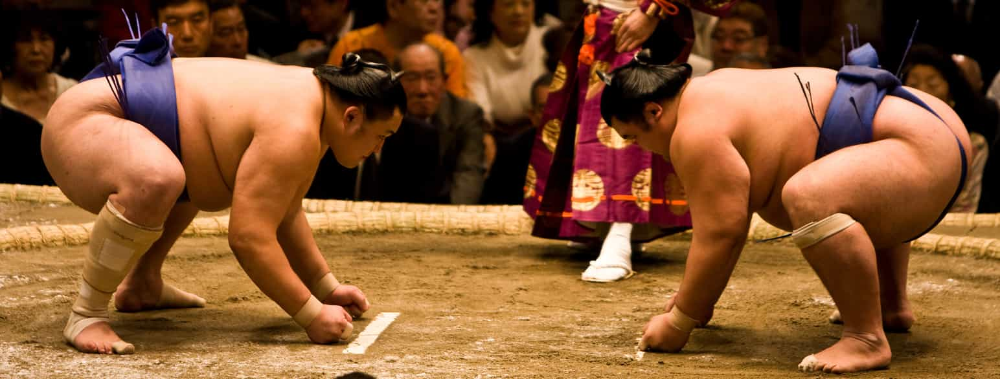
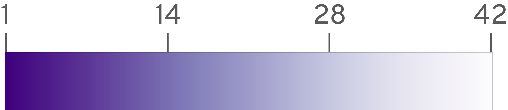

What is the key to become top-tier Sumo wrestlers?
ARTG 5330 Final Project | December 2020 by Yuriko
Schumacher
Introduction
In this project, I am analyzing Japanese Sumo
wrestling's
tournament ranking table (番付, banzuke)
to see what kind of wrestlers are at the top of the
rankings.
Purpose of the project
I am analyzing this data because I have been asked about
Sumo so much since I moved to the US (since I am from
Japan), but I wasn't able to answer the questions very
well. In fact, I have never watched a Sumo match in
person. Through this project, I would like to learn more
about Sumo wrestling, as well as be able to answer
questions about the sport.
A little bit about Sumo

Sumo (相撲) is full-contact wrestling where two
wrestlers (力士,
rikishi) grapple and attempt to push or throw
their opponent. The winner is the one who forces the
opponent out of the ring or into touching the ground
with any part of their body other than their feet.
Generally, heavier wrestlers tend to be ranked higher
since they are harder to move.
In Japan, Sumo is practiced professionally as a national
sport. Japan usually holds
The Sumo Grand Tournament
six times a year, and each tournament has its own
tournament ranking table.
There are about 700 wrestlers in total, and they are
grouped into six divisions based on rank. The top 42
wrestlers are part of a group known as "幕内,
makuuchi".
Sumo banzuke data set
A data scientist
Mikhail Zhilkin
put together a data set for official tournament ranking
tables based on official information released by The
Japan Sumo Association. I am using the data set for The
2019 Sumo Grand Tournament from
data.world.
Data analysis
For this project, I am comparing the data for top 42
wrestlers over 20 years, quinquennially. I am analyzing
January's tournament data for each year.
First, I am visualizing the top 42 wrestlers' weight and
height, as well as their place of birth and ranking. I
am also creating a second visualization that shows the
number of wrestlers for each age and their countries of
birth and ranks, over the years. These analyses were
motivated by the following questions:
Are Mongolian wrestlers really strong? I hear
many strong wrestlers are from Mongolia, so I would
like to know if this is true.
The taller/heavier, the better? I would like
to know if there is a correlation between the
wrestler's height/weight and their rank.
What's the best age for sumo wrestlers? As
much as sumo is a physical sport, I know there are
many wrestlers in their late 30s who are ranked high
in Makuuchi division. I'd like to know the general
tendency in terms of wrestler's age and rank.
I conducted the initial analysis using R. The original
data sets are seperated by the years, and each has
rankings for all six tournaments held in that year.
Therefore, for each year's data, I filtered the rows to
only show January's top 42 wrestlers, and then combined
the five seperated data sets. I also converted kilograms
into pounds, centimeters into feet, and birth dates into
ages (as of the time each tournament table was
published).
The cleaned data has 210 rows and 12 columns. Each row
represents a wrestler. The columns are as follows:
basho: The year and month the tournament was
held
rank: The wrestler's rank (1 to 42)
rikishi: The wrestler's name
shusshin: The wrestler's country of birth
country: The wrestler's country of birth
(Japan, Mongolia, or elsewhere)
weight_pounds: The wresler's weight (lbt)
height_feet: The wresler's height (ft)
height_feet_floor: The wrestler's height (ft)
downwords to the nearest integer
height_inches_reminder: The wrestler's height
in inches subtracted by the value of
heigh_feet_floor
age: The wresler's age (as of the time the
tournament table was published)
count: The wrestler's rank inside of the same
age for the year
Visualization
Here, I'm creating two data visualizations. The first
visualization shows 1) where the topmost wrestlers are
from, and tires to find out 2) if taller/heavier
wrestlers are higher-ranked, over two decades. The
second one demonstrates how many wrestlers were at what
age on the top 42 tournament table over time.
1. Relationships between height/weight and rank
For the first visualization, I created a scatter plot.
Inside the scatter plot, each circle represents a
wrestler in the Makuuchi (top 42) division. The x-axis
shows the wrestler's weight in lbs, while the y-axis
shows the wrestler's height in feet. The color shows the
wrestler's rank (from 1 to 42). The circle(s) with
yellow strokes represent wrestlers from Mongolia, in
order to distinguish them easily since one of the
questions I'm trying to answer is if Mongolian wrestlers
are stronger in general.
By clicking the buttons from January 1999 to January
2019, you can select which year's data to show. The
original chart shows data for January 1999.
There is also a filter feature that can apply to each
year's visualization. By clicking the checkboxes, you
can filter the wrestlers by whether they are from Japan,
Mongolia, or other countries. At the same time, you can
change the minumum and maximum ranks of the wrestlers
shown. If you change the data's year, the filter feature
will reset automatically and the scatter plot will have
42 circles to show.
In any of the state, you can see a wrestler's detailed
information in a tooltip by hovering over a circle.
Makuuchi (top 42) Sumo wrestler's height/weight and
rank, country of birth Sumo Grand Tournament
1999 ~ 2019
Show wrestles from
Japan
Mongolia
Elsewhere
Filter by wrestler's overall rank
(1 to 42)
from:
to:
Rank

Mongolian wrestlers
Wrestlers from elsewhere
Findings from the visualization
The visualization demonstrates a few facts:
Although there are occasional outliers, most of the
Makuuchi wrestlers weigh around 280 ~ 400 pounds.
Conversely, we can't see any strong tendencies of
their height.
It's not necessarily true that the taller/heavier
the wrestlers are, the stronger. For example, in
January 1999, Wakanohana (5'11", 289lbs) is
ranked 2nd, whereas Akebono (6'8", 501lbs)
and Musashimaru
(6'3", 474lbs) are ranked 3rd and 4th respectively.
More and more Mogolian wrestlers are coming into the
Makuuchi division over the two decades. The numbers
of Mongolian wrestlers increase from 1 (January
1999) → 4 → 9 → 10 → 6 (January 2019). The rumor --
that Mongolian wrestlers are generally strong --
appears to be only true in recent years. Still, most
Makuuchi wrestlers are Japanese over all.
2. Makuuchi wrestler's age distribution
Next, I'm going to visualize how many wreslers are at
what age in the Makuuchi (top 42) division.
Similar to the first chart, each circle represents a
wrestler, and the circle's color represents the
wrestler's rank (1 to 42). Mongolian wrestlers are
highlighted as yellow.
The x-axis shows the wrestler's age (when the tournament
table was published), and the y-axis shows the number of
wrestlers at each age. By selecting the button on top
(from January 1999 to January 2019), you can select
which year's data to show. Originally, the visualization
represents the data for January 1999.
Makuuchi (top 42) Sumo wrestler's age and rank Sumo
Grand Tournament 1999 ~ 2019
Rank
Mongolian wrestlers
Wrestlers from elsewhere
Findings from the visualization
The visualization demonstrates a few facts:
Many high-ranked Makuuchi wrestlers are late 20s and
early 30s. Younger and older wrestlers occasionally
do well, such as Asashoryu (from January
2004, age: 23, rank: 1), and Kaio (from
January 2009, age: 36, rank: 6).
Kyokutenho (from January 2014, age: 39, rank:
39) was an unusually old wrestler to be registered
in the Makuuchi division.
You can find many wrestlers who stay in the Makuuchi
division over the years such as
Chiyotaikai (from January 2004, age: 27,
rank: 3 / from January 2009, age: 32, rank: 4) and
Hakuho
(from January 2009, age: 23, rank: 1 / from January
2014, age: 28, rank: 2 / from January 2019, age: 33:
rank: 2). Those wrestlers are the most successful
ones who stay atop over many years throughout their
career.
From these findings, it can be said that elements like
wrestler's height/weight, place of birth, and age matter
to a certain degree, but there seem to be many more
factors that break the general tendency and determine
their sumo-wrestling skills.